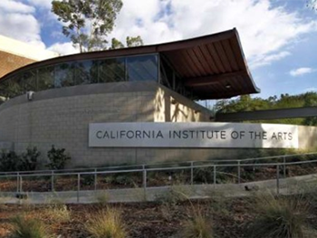

加州艺术学院CalArts是一所位于美国加州 Valencia 的私立高等艺术学院。自从创办人华特迪士尼1961年创立至今，CalArts的六个艺术学院在各自领域上持续登峰造极。
艺术学校、批判性研究学校、雪伦迪士尼罗德舞蹈学校、影像/摄影/录像学校、贺博艾尔帕音乐学校以及戏剧学校。在CalArts跨领域的文化带领之下，我们尽全力地支持鼓励学生在创造上的自由度、实验性以及在艺术上不断地创新。CalArts得到 WASC 美西学术学会的认证授权视觉艺术以及表演艺术的本科以及研究生学位，还有从1994年起开始授与的文学学位。
CalArts的贺博艾尔帕音乐学校提供无与伦比严谨而丰富多元的音乐风格以及文化训练。这样的组合协助学生借此获得音乐上的灵活跨越传统界线的能力，拓展他们的艺术与文化水平进而塑造全球性文化人的创意视野。
加州艺术学院所设学位：
BFA Program： 本科
MFA Program： 研究生
DMA Program：博士
加州艺术学院接受托福和雅思成绩：
托福：80
雅思：6.5
托福递交号码：4049
如果您想更详细的了解加州艺术学院的专业老师介绍，请点击以下连接：
https://music.calarts.edu/faculty
如果您想更详细的了解加州艺术学院专业设置以及所有学位，请点击以下连接：
https://music.calarts.edu/academics
如果您想更详细的了解加州艺术学院招生办公室信息，请点击以下连接：
https://www.calarts.edu/admissions
加州艺术学院网上申请系统链接：
https://app.applyyourself.com/AYApplicantLogin/fl_ApplicantConnectLogin.asp?id=calarts